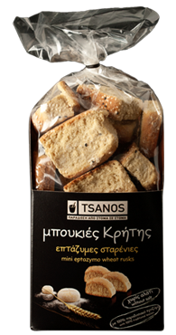
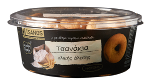
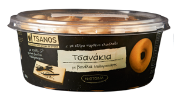
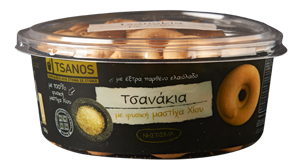
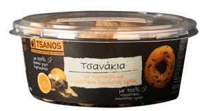
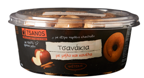
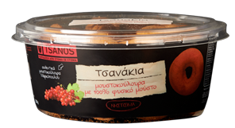
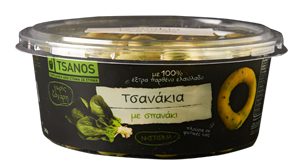

Δοκιμάστε τώρα τη νέα ποικιλία παξιμαδιών Κρήτης...
Αγαπημένες παραδοσιακές συνταγές με αγνές κρητικές πρώτες ύλες
επτάζυμο σταρένιο
επτάζυμο κρίθινο
επτάζυμο
κριθαροκουλούρα
σικάλεως ολικής άλεσης
κρίθινο
κριθαροκουλουρίτσα
κρητικός ντάκος κρίθινος
τύπου Κυθήρων
κρίθινες μπουκιές χωρίς αλάτι
μπουκιές σικάλεως ολικής άλεσης

επτάζυμες μπουκιές σταρένιες
επτάζυμες μπουκιές κρίθινες
κρίθινες μπουκιές ελαιόλαδου
μπουκιές κρίθινεςο
μπουκιές επτάζυμες
Τα αγαπημένα σας κουλουράκια, τώρα και σε μικρές μπουκίτσες...
...για να συνοδεύουν απολαυστικά την κάθε σας στιγμή!

με αλεύρι ολικής άλεσης (digestive)
με μέλι και σουσάμι

με βανίλια Μαδαγασκάρης

με φυσική μαστίχα Χίου

με πορτοκάλι και σοκολάτα υγείας
σοκολάτας με κομματάκια σοκολάτας υγέιας

με φρέσκο μήλο και κανέλα

πορτοκαλιού

μουστοκούλουρα
με 4 τυριά

με καρότο
με αλεύρι ολικής άλεσης

με ελιές
πολύσπορα

με σπανάκι